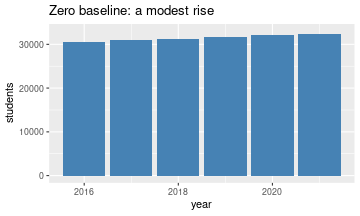
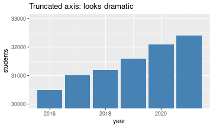
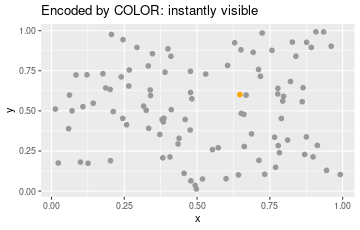
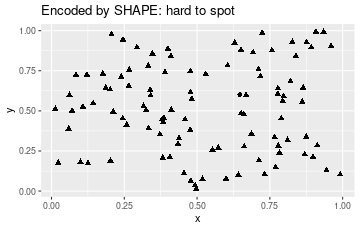
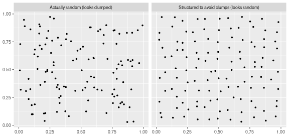

This is an introduction — ideas to think about for your project, not a set of rules. Good data visualization is a creative process; there are no answers, only better and worse choices. The goal here is to sharpen your eye, mostly by looking at what goes wrong.
A real story. Take years of your own cholesterol blood tests — a plain table of numbers on a hospital website — and ask an LLM to just plot them. Total cholesterol is (by definition) a weighted sum of the other components, so it can never exactly equal any single one of them. Yet on the plot, one month’s triglycerides sat exactly on the total-cholesterol line — visibly impossible. It was a data-entry typo: someone had keyed the total-cholesterol number into the triglycerides field. Two doctors reading the table never caught it (and flagged “high triglycerides, keep monitoring” for two years); the picture made it jump out immediately.
That’s the whole case for visualization in one anecdote: plotting exposes structure — and errors — that a table conceals. Now, what makes a plot good?
A good visualization presents information in a way that is:
These pull against each other, which is why it’s a craft. A few touchstones:
Some charts are “technically accurate” yet built to mislead. The most common trick is truncating the y-axis so a small change looks huge.
enroll <- data.frame(
year = 2016:2021,
students = c(30500, 31000, 31200, 31600, 32100, 32400)
)
# Honest: zero baseline — a modest rise.
ggplot(enroll, aes(year, students)) +
geom_col(fill = "steelblue") +
coord_cartesian(ylim = c(0, 33000)) +
labs(title = "Zero baseline: a modest rise")
# Same data, truncated axis — looks dramatic.
ggplot(enroll, aes(year, students)) +
geom_col(fill = "steelblue") +
coord_cartesian(ylim = c(30000, 33000)) +
labs(title = "Truncated axis: looks dramatic")
Same numbers, opposite impressions. Reading the axis labels would set you straight — but most people read the bars, not the labels. Truncating a bar chart’s axis edges from “emphasis” into “dishonesty.”
The famous Challenger O-ring chart is a subtler failure. The engineers’ original plot of O-ring damage was so cluttered — rocket icons, no clear temperature axis — that the crucial signal (damage rises sharply at low temperature, and the launch temperature was far colder than anything ever tested) was invisible. A clean scatter of damage vs. temperature makes the danger obvious. Here the visualization didn’t lie; it just failed to communicate, with catastrophic consequences.
Another class: misleading data, faithfully plotted. A New York Times chart showed a steep drop in the share of people rating it “essential” (10/10) to live in a democracy — implying collapsing support. But the survey was a 1–10 scale; collapsing it to “was it a 10 or not” throws away most of the information, and the average rating barely moved. The chart honestly shows a bad summary of the data.
Even an honest chart can be hard or easy to read depending on how you encode categories. Color pops out; shape much less so.
set.seed(1)
d <- data.frame(x = runif(100), y = runif(100))
d$special <- FALSE
d$special[42] <- TRUE # one odd point out of 100
# Encoded by COLOR: instantly visible.
ggplot(d, aes(x, y, color = special)) +
geom_point(size = 2, show.legend = FALSE) +
scale_color_manual(values = c(`FALSE` = "grey60", `TRUE` = "orange")) +
labs(title = "Encoded by COLOR: instantly visible")
# Encoded by SHAPE (triangles vs one circle): hard to spot.
ggplot(d, aes(x, y, shape = special)) +
geom_point(size = 2, show.legend = FALSE) +
scale_shape_manual(values = c(`FALSE` = 17, `TRUE` = 16)) +
labs(title = "Encoded by SHAPE: hard to spot")
The orange point among grey is pre-attentive — you find it without searching. The lone circle among triangles takes a deliberate hunt. Color, or color plus shape, is a stronger encoding for “which one is different?”
Humans are pattern-detectors, which backfires on scatter plots. Points placed completely at random (a Poisson process) look clumpy; points arranged to avoid clumping look, paradoxically, more “random” and even.
set.seed(3)
# Truly random (Poisson): independent uniform points.
poisson_pts <- data.frame(x = runif(120), y = runif(120))
# Regular: a jittered grid — deliberately spread out, no clumps.
g <- expand.grid(x = seq(0.05, 0.95, length.out = 11),
y = seq(0.05, 0.95, length.out = 11))
g <- g[sample(nrow(g), 120), ]
regular_pts <- data.frame(x = g$x + runif(120, -0.03, 0.03),
y = g$y + runif(120, -0.03, 0.03))
both <- rbind(
cbind(poisson_pts, type = "Actually random (looks clumped)"),
cbind(regular_pts, type = "Structured to avoid clumps (looks random)")
)
ggplot(both, aes(x, y)) +
geom_point(size = 1) +
facet_wrap(~ type) +
labs(x = NULL, y = NULL)
Most people call the left plot “structured” and the right one “random” — it’s the other way around. The lesson: if your real data looks clumpy, don’t let a reader (or yourself) conclude there’s a pattern by eyeballing it. Back the claim with an actual numeric measure of clustering, so nobody is fooled by the eye’s appetite for patterns.
For the project you’ll build some kind of dashboard — an interactive visualization, not a static pie chart. “Interactive” can mean you click a cluster and see the posts inside it, or you feed in new data and it updates. You do not need Shiny; a coding agent will happily produce a standalone interactive HTML page. Prefer a standalone artifact (a URL or file you can put on a résumé) over something that only runs inside a chat window — the content can be identical, but only one of them is shareable.
For the final version, the expectation is that you iterate: keep screenshots of your first attempt and what was wrong with it, then your improvements. The value you add isn’t beating the agent at coding — it’s the creative judgment about what is informative, usable, and worth looking at.